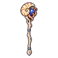

แอมโมไนต์คลาน
มอนธาตุน้ำ Lv 88–98
เจอที่
| แมพ | โซน | Lv | ภูมิภาค |
|---|---|---|---|
| หาดซากแอมโมไนต์ | 88–94 | ที่ราบสูง | |
| หาดซากแอมโมไนต์ | 90–98 | ที่ราบสูง | |
| หาดซากแอมโมไนต์ | เปลือกหอยยักษ์ | 94–96 | ที่ราบสูง |
| หาดซากแอมโมไนต์ | เปลือกหอยยักษ์ | 96–98 | ที่ราบสูง |
ค่าสถานะตามเลเวล
| Lv | HP | ATK | DEF | MDEF | EXP | Job |
|---|---|---|---|---|---|---|
| 88 | 65,919 | 178–267 | 25 | 21 | 107 | 80 |
| 93 | 76,958 | 193–290 | 26 | 22 | 113 | 85 |
| 98 | 88,363 | 211–317 | 27 | 24 | 119 | 89 |
ตีด้วยธาตุไหนดี
แรงขึ้น: ลม ×1.75
เบาลง: ไฟ ×0.5 น้ำ ×0.25
วัตถุดิบที่ดรอป
| ของ | โอกาส | |
|---|---|---|
| มุกเกลียวแอมโมไนต์ | 55% | 1 ชิ้น (15% ได้ 2) |
อุปกรณ์ที่ดรอป (1)
| ของ | โอกาส |
|---|---|
 คทาเกลียวแอมโมไนต์ | 0.06% |
สกิล
ยิงกระจาย (Lv 25+) · ยิงกระจาย (Lv 60+) · ปาตกใส่ (Lv 60+)